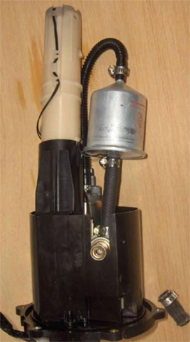
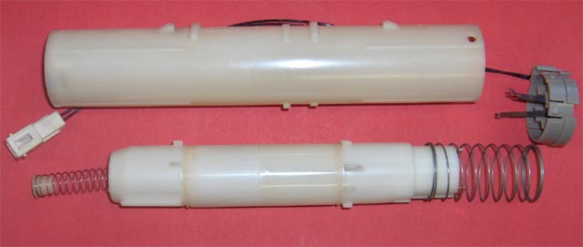
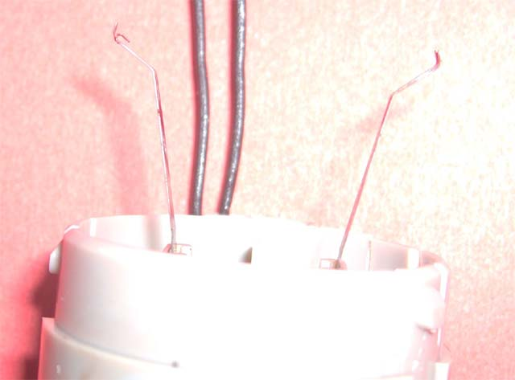
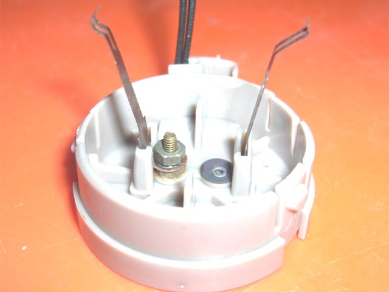

In the 1086 days of ownership of #922, Nelli has travelled 39,417km, consumed 3,139 litres of fuel and been filled 240 times. This has taken it's toll on the fuel level sensor.
|  |  |
The fuel pump assembly shown, has had it's original fuel filter replaced by a Ryco (near) equivalent.
The level sensor parts comprise:-
1. barrel - at the top
2. wiper & cap - centre right
3. float bottom adjusting cap & spring (bottom left)
4. float - including scale, at it's top (right)
5. top Spring
6. bottom adjusting screw (not shown)
If you look at the scale, you'll see that it is made on a ceramic substrate, with many parallel metal
tracks deposited onto it. At the edge of the tracks, carbon has been deposited, to provide a variation
in resistance as the wiper moves up the scale. The minimum resistance (full), as seen by the wiper, was
measured at 12 Ohms, and the maximum (empty) was measured at 252 Ohms.
The workshop manual states that the range should be 21 Ohms to 285 Ohms. This would ensure that the gauge
can operate over it's full range, of 0 to 8 bars.
The minimum resistance for 0 bars, was tested at 266 Ohms, so it is clear that this sensor, at 252, was no
longer able to exercise the gauge completely.
Over time, the wiper has been partially running over the carbon track, dislodging carbon, and redepositing it between the metal tracks. This has mainly been happening in the high resistance region. With the additional carbon between the parallel tracks, over a wider area, the total resistance has been reduced.
To solve the problem, each groove between the tracks was scraped, using a sharpened pick, while viewing under a microscope. Once the white ceramic substrate was visible again, the maximum resistance had risen to 294 Ohms. More than enough for the gauge to show empty.
|  |  |
As the wiper has moved up and down the scale tracks, the softer (beryllium?) copper has worn to the point where it has lost it's strength. As seen on the left, the metal has bent back on itself. This has resulted in the wiper catching on the scale tracks, blocking movement in one direction. The guage no longer showing the correct tank level. The wiper on the right is pristine. It moves over a smooth surface, so hasn't worn at all.
The solution to this problem, involves nipping off the worn copper, and re-bending it to produce a smooth curve which will flow over the scale tracks. The problem with this, though, is it involves shortening the wiper, reducing it's travel. The gauge will no longer register a full tank. In my case, it ended up 2mm shorter. This was corrected by removing the copper rivet holding the wiper to the plastic cap, and replacing it with an 8BA brass screw & 2 nuts. The first nut provides the 2mm spacing, and locks the wire teardrop in place. The other, together with a star washer & loctite 243, clamps the wiper in place.
With both of these mods, the gauge registers correctly from 0 to 8 bars.
(5 minutes later) Not long, it would appear. Melting the plastic reduced the tension on the terminal, creating another high resistance joint. After removing the screw, cleaning up the plastic base and reassembling it, the fault went away.
I have an idea for a non-contact, capacitive level sensor, so I'm not too fussed about doing this job properly. A capacitive sensor will take up less valuable fuel space, and will be more acurate. With a tiny microprocessor, it can smooth out the fluctuations over minutes, resulting in a much more stable reading.
{kind=link}